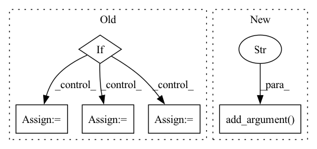

Pattern ID :37885
Before Change
optimizer = torch.optim.Adam(milnet.parameters(), lr=args.lr, betas=(0.5, 0.9), weight_decay=args.weight_decay)
scheduler = torch.optim.lr_scheduler.CosineAnnealingLR(optimizer, args.num_epochs, 0.000005)
if args.new_features == 0:
bags_csv = "datasets/tcga-dataset/TCGA.csv"
else:
luad_list = glob.glob("datasets"+os.sep+"wsi-tcga-lung"+os.sep+"LUAD"+os.sep+"*.csv")
lusc_list = glob.glob("datasets"+os.sep+"wsi-tcga-lung"+os.sep+"LUSC"+os.sep+"*.csv")
luad_df = pd.DataFrame(luad_list)
luad_df["label"] = 0
luad_df.to_csv("datasets/wsi-tcga-lung/LUAD.csv", index=False)
lusc_df = pd.DataFrame(lusc_list)
lusc_df["label"] = 1
lusc_df.to_csv("datasets/wsi-tcga-lung/LUSC.csv", index=False)
bags_path = luad_df.append(lusc_df, ignore_index=True)
bags_path = shuffle(bags_path)After Change
parser.add_argument("--num_epochs", default=40, type=int, help="Number of total training epochs")
parser.add_argument("--weight_decay", default=5e-3, type=float, help="Weight decay")
parser.add_argument("--new_features", default=0, type=int, help="Use newly trained features 1/0(on/off)")
parser.add_argument("--dataset" , default="TCGA-lung", type=str, help="Dataset folder name")
args = parser.parse_args()
i_classifier = mil.FCLayer(in_size=args.feats_size, out_size=args.num_classes).cuda()In pattern: SUPERPATTERN
Frequency: 4
Non-data size: 5
Instances Fragment ID: 108623992
Project Name: binli123/dsmil-wsi
Commit Name: 9679d9909a89006555a4d371274255f65ef695ac
Time: 2021-05-20
Author: bli346@wisc.edu
File Name: train_tcga.py
M Class Name: AnonimousClass
N Class Name: AnonimousClass
M Method Name: main(0)
N Method Name: main(0)
M Parent Class:
N Parent Class:
M File Name: train_tcga.py
N File Name: train_tcga.py
M Start Line: 129
M End Line: 165
N Start Line: 111
N End Line: 169
Before Change
heuristic_count += 1
continue
_, quote_values = remove_thingtalk_quotes(o[args.thingtalk_column])
if quote_values is None:
heuristic_count += 1
continue
should_skip = False
for q in quote_values:
if q not in all_input_columns:
heuristic_count += 1
should_skip = True
break
if should_skip:After Change
help="The path to the output file.")
parser.add_argument("--query_file", type=str,
help="The path to the file containing new queries.")
parser.add_argument("--thrown_away" , type=str, default=None,
help="The path to the output file that will contain inputs that were removed because of `--transformation`.")
parser.add_argument("--thingtalk_gold_file", type=str,
help="The path to the file containing the dataset with a correct thingtalk column.")
parser.add_argument("--num_new_queries", type=int, default=1,
help="Number of new queries per old query. Valid if "--transformation replace_queries" is used.") Fragment ID: 108623945
Project Name: stanford-oval/genienlp
Commit Name: d2eacd4e5c5347cb45907aea9e0a81a54b9fd5bf
Time: 2020-05-26
Author: s.j.semnani@gmail.com
File Name: genienlp/paraphrase/scripts/transform_dataset.py
M Class Name: AnonimousClass
N Class Name: AnonimousClass
M Method Name: main(0)
N Method Name: main(0)
M Parent Class:
N Parent Class:
M File Name: genienlp/paraphrase/scripts/transform_dataset.py
N File Name: genienlp/paraphrase/scripts/transform_dataset.py
M Start Line: 55
M End Line: 162
N Start Line: 31
N End Line: 196
Before Change
assert osp.isdir(args.path_in)
assert osp.isdir(osp.join(args.path_in, "data_3d_semantics", args.scene_name)), f"Input folder not found {osp.join(args.path_in, "data_3d_semantics", args.scene_name)}"
if args.shift_cells:
cells_text = "Y"
elif args.grid_cells:
cells_text = "G"
else:
cells_text = "N"
args.path_out = f"{args.path_out}_{args.cell_size}-{args.cell_dist}_sc{cells_text}_pd{args.pose_dist}_pc{args.pose_count}_sp{"Y" if args.shift_poses else "N"}_{args.describe_by}_nm{args.num_mentioned}"
if args.describe_best_cell:After Change
parser.add_argument("--describe_best_cell", action="store_true")
parser.add_argument("--no_ontop", action="store_true")
parser.add_argument("--all_cells" , action="store_true", help="Do not reject cells with too few objects.")
args = parser.parse_args()
assert osp.isdir(args.path_in) Fragment ID: 108624107
Project Name: mako443/text2pos-cvpr2022
Commit Name: e2c96e40d20820ff3d569acc39ca96d28fe7121f
Time: 2021-06-03
Author: manuel.kolmet@gmail.com
File Name: datapreparation/args.py
M Class Name: AnonimousClass
N Class Name: AnonimousClass
M Method Name: parse_arguments(0)
N Method Name: parse_arguments(0)
M Parent Class:
N Parent Class:
M File Name: datapreparation/args.py
N File Name: datapreparation/args.py
M Start Line: 27
M End Line: 45
N Start Line: 7
N End Line: 66
Before Change
opt.learning_rate = 0.01
// set the path according to the environment
if hostname.startswith("visiongpu"):
opt.model_path = "/path/to/my/model"
opt.tb_path = "/path/to/my/tensorboard"
else:
opt.model_path = "./save/models"
opt.tb_path = "./save/tensorboard"
iterations = opt.lr_decay_epochs.split(",")
opt.lr_decay_epochs = list([])After Change
parser.add_argument("--device", type=str, default="cuda:1", help="batch_size")
// optimization
parser.add_argument("--learning_rate" , type=float, default=0.1, help="learning rate")
parser.add_argument("--lr_decay_epochs", type=str, default="200, 300, 400, 500", help="where to decay lr, can be a list")
parser.add_argument("--lr_decay_rate", type=float, default=0.1, help="decay rate for learning rate")
parser.add_argument("--weight_decay", type=float, default=5e-4, help="weight decay")
parser.add_argument("--momentum", type=float, default=0.9, help="momentum") Fragment ID: 108624112
Project Name: alldbi/supermix
Commit Name: 37639c730e5763956c96ea607288813804b962b7
Time: 2020-01-17
Author: ad0046@mix.wvu.edu
File Name: train_teacher.py
M Class Name: AnonimousClass
N Class Name: AnonimousClass
M Method Name: parse_option(0)
N Method Name: parse_option(0)
M Parent Class:
N Parent Class:
M File Name: train_teacher.py
N File Name: train_teacher.py
M Start Line: 24
M End Line: 78
N Start Line: 25
N End Line: 69